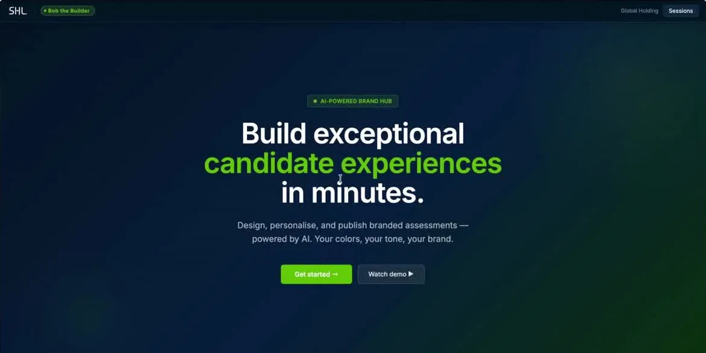
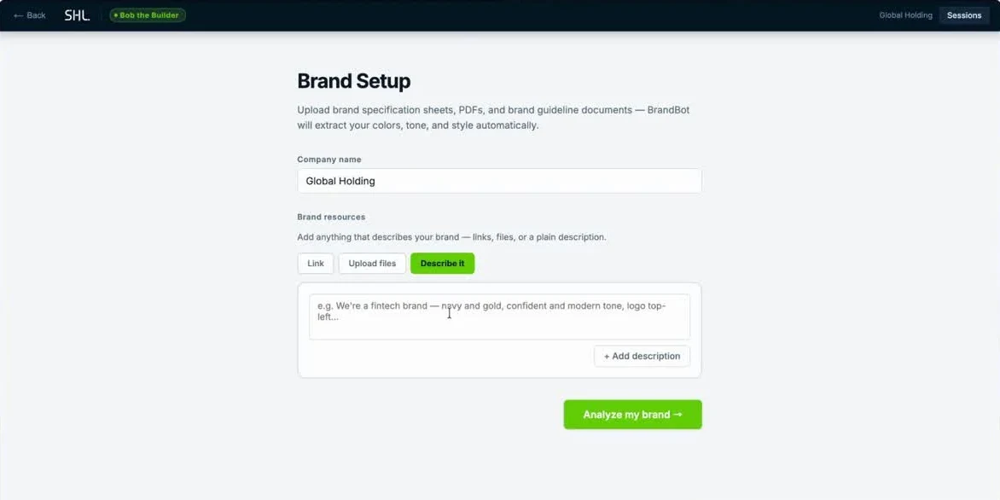
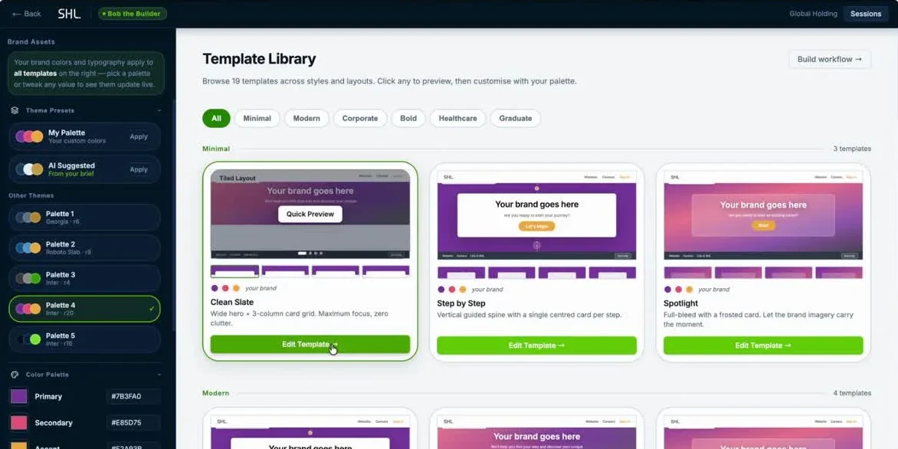
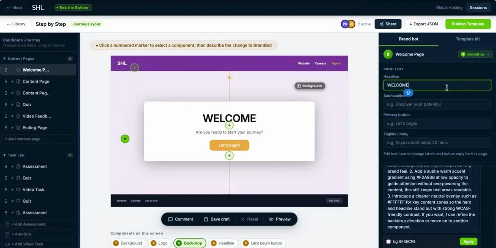
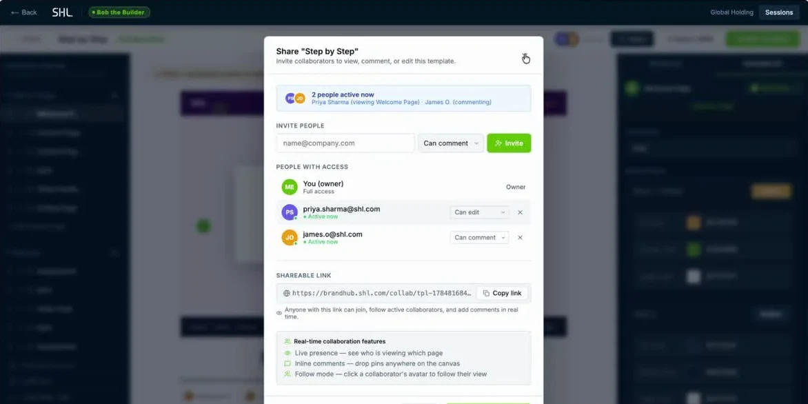

SHL · AI hackathon · Team "Prompt and Pixels"
Bob the Builder: weeks of manual branding, turned into a conversation.
An AI implementation consultant for SHL's Advanced SHLE candidate experiences. Clients describe their brand once, and it builds, live-previews and publishes the template pages a deployment team used to hand-build.
- My role
- Product & UX design
- Team
- Prompt and Pixels, 3–4 people
- Timeline
- 2-day hackathon
- Result
- Top 10 of 100 submissions · final results awaited

to deploy one Advanced SHLE template today
branding specification, completed by hand
review cycles, each one a rebuild
The problem
SHL sells two candidate-experience tiers. Essential is off-the-shelf with limited branding. Advanced SHLE is fully bespoke, and the deployment team builds every template by hand.
There is no draft mode and no live preview, so a client only sees the result once it is built and published. Every round of feedback sends the work back to the start, and each loop adds 2–3 weeks.
- Client requestA client asks for an Advanced SHLE experience.
- ConsultantShares the 60-page branding specification.
- Customer brandingThe client fills it in and sends it back.
- Deployment teamTranslates the spec into a template by hand.
- ReviewQA and the client review, only after publishing.
- FeedbackChanges come back as a list.
- RebuildBack to step 4. +2–3 weeks, every time.
We spoke to the people who run this process:
“Since there is no preview, every client revision means rebuilding the template from scratch.”
Deployment team“A two-week change request can derail the entire delivery plan.”
Implementation consultants“Customers can't see the journey until it's published.”
Project managers“Deployment delays are the top reason clients hesitate to upgrade.”
Presales & commercialThe real blocker to SHLE Advance adoption was not the product. It was how slowly a branded version could ship.
My role & process
Two days, a small team, and a problem that needed framing before it needed screens.
- Interviewed deployment, implementation, project management and presales stakeholders, and synthesised the key finding above.
- Led the product and UX thinking from discovery to prototype.
- Defined the core interaction: click a numbered marker on any live element, describe the change in plain language, watch it update.
- Shaped the information architecture: templates as layout families with their own pages, and one candidate workflow built from exactly one template.
- Worked with engineering on feasibility, and co-wrote the submission.
- Pattern discoveryMapped the current journey.
- ResearchStakeholder interviews.
- IdeationOptions for removing the spec.
- WhiteboardTemplate, page and workflow hierarchy.
- WireframesEditor, chat and preview.
- PrototypeClickable end-to-end flow.
The solution
Bob replaces the specification with a conversation. Clients describe their brand, see a live preview, review together and publish, in a loop that takes minutes instead of weeks.
Chat
Paste a link, upload files or describe the brand in plain language.
Preview
See every page of the candidate journey update instantly.
Collaborate
Live presence, inline comments and follow mode, instead of email.
Publish
Export JSON into TC+ today, with native one-click publish next.

Brand setup: a link, a file or a plain description. Bob extracts palette and typography.

Template library: editing the palette updates every template preview live.

The editor: click a numbered marker and describe the change to BrandBot.

Share and collaborate: live presence, comments and permission levels.
Built-in WCAG checks run on every template, and drafts can be saved and refined without republishing. A typical prompt: “Use navy blue theme with gold accents. Place logo top-right. Buttons should be rounded.”
The demo
The walkthrough we submitted: brand intake, the template library and the conversational editor.
Projected impact
These are projections from our submission, not realised results.
| Today | With Bob | |
|---|---|---|
| Deployment time | 4–7 weeks | Under 1 week |
| Review cycles | 5 or more | 1–2 |
| Brand input | 60-page specification | AI conversation |
| Preview | None until published | Live, from the first prompt |
| Collaboration | Calls and email | Real-time comments |
| Publishing | Rebuild and republish | One click |
more projects per consultant, with no added headcount
projected increase in customer satisfaction
faster SHLE Advance adoption
What's next
Phase 1 · Now
AI template generation
Extract brand assets and export deployable JSON.
Phase 2
Native TC+ deployment
One-click publish, with no JSON files or manual imports.
Phase 3
NextGen AI experiences
Custom screener avatars and AI-powered recommendations.
Phase 4
AI marketplace
Premium template collections with built-in upsell.
Reflection
Let research reframe the brief. It started as “fix the branding tool”. Talking to the people who run the process turned it into “shipping speed is the real blocker”.
Get the hierarchy right before the UI. The template, page and workflow structure was corrected several times as we built. I'd pressure-test the data model earlier.
Prototype fast, even roughly. A clickable flow surfaced disagreements about scope far faster than static screens would have.